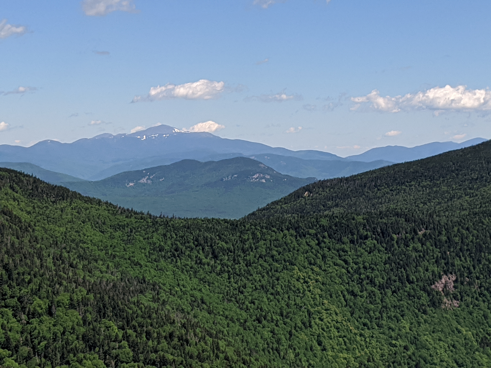

Distance
Distance Elevation
Elevation Observed Wildlife
Observed Wildlifeto
This one night backpack offered some amazing ridgeline backpacking. Camp Rich is a quality campsite and I enjoyed one of the best views in the White Mountains from the lookout atop Passaconaway.


